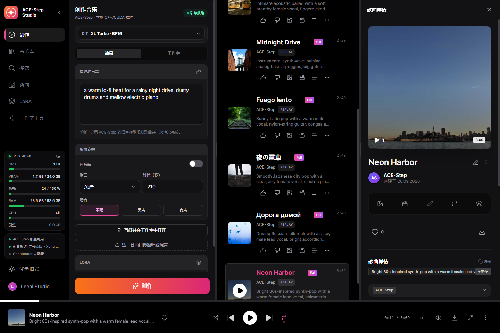
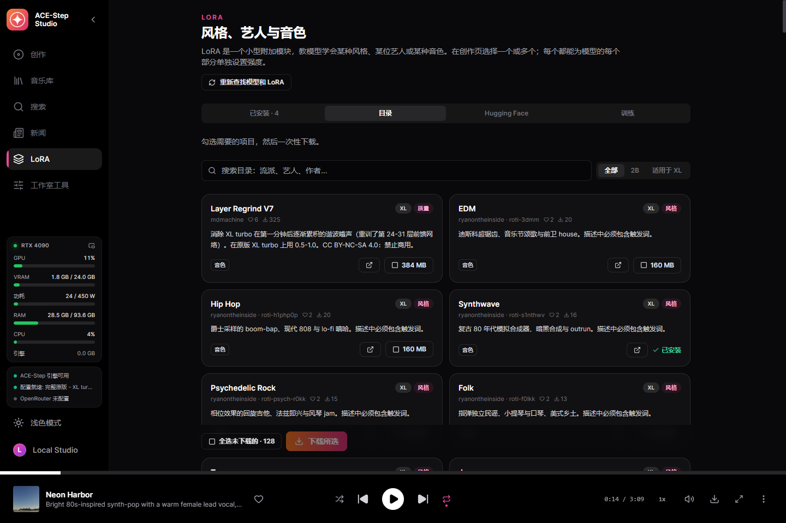
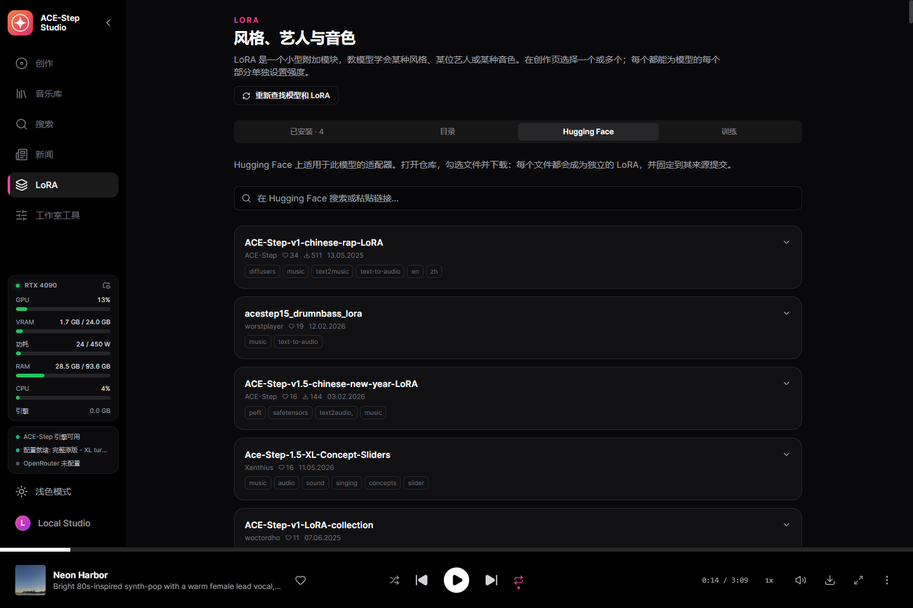
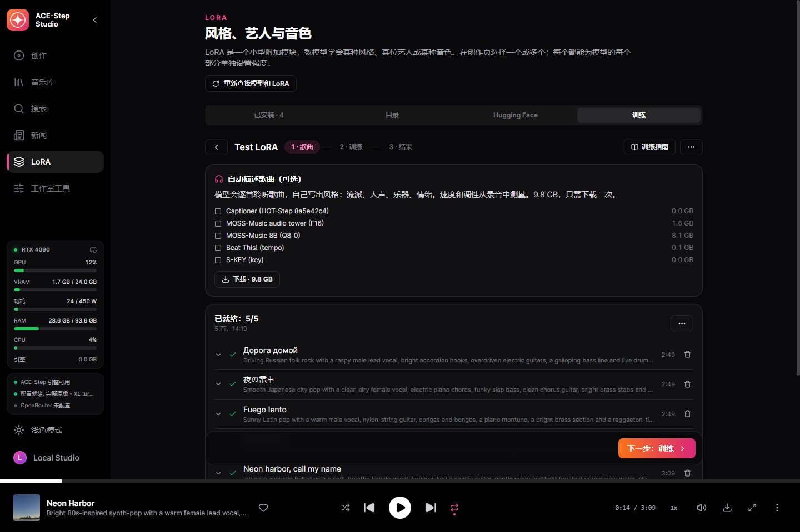
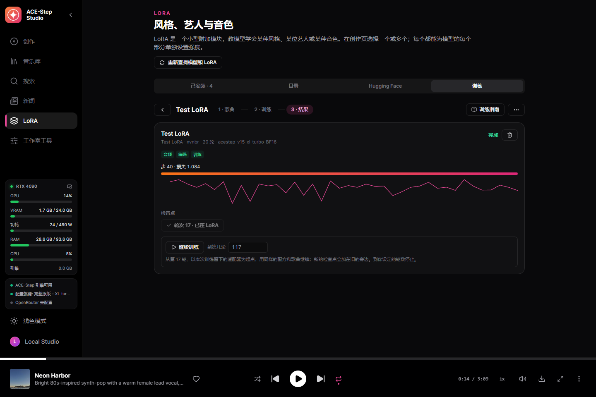
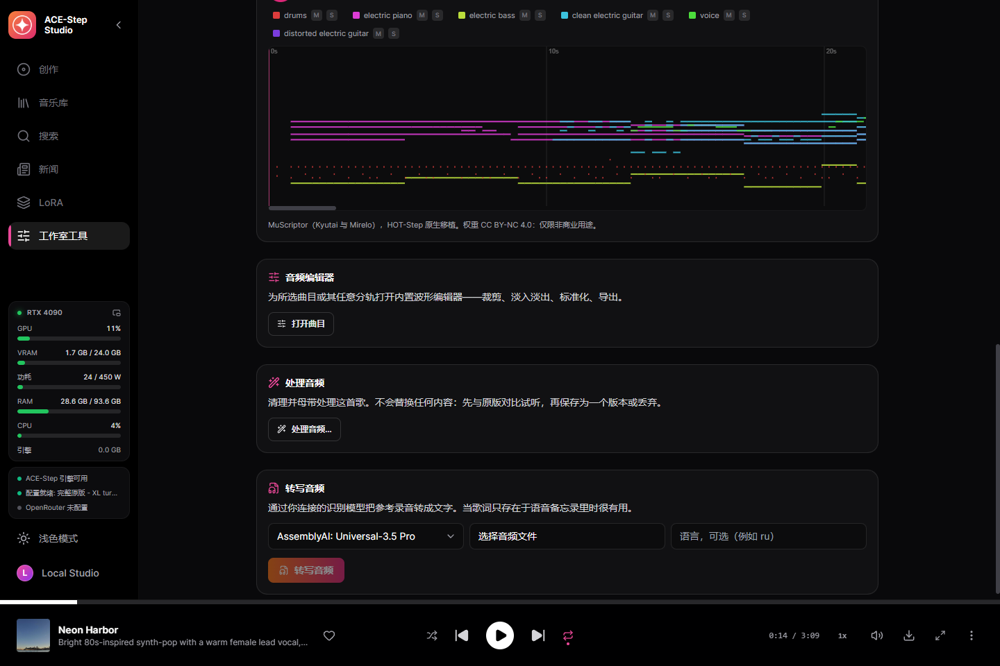
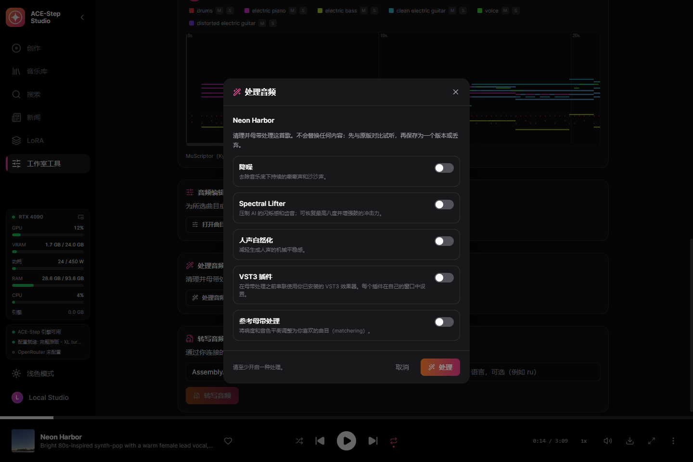
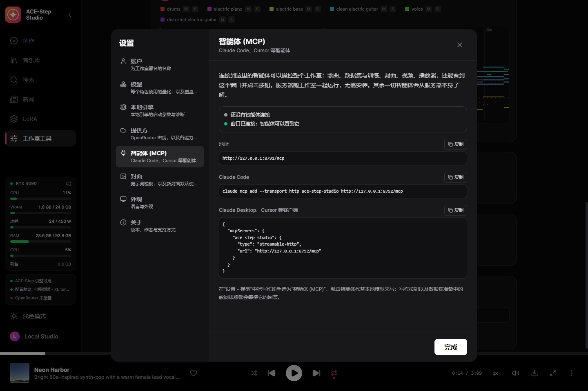
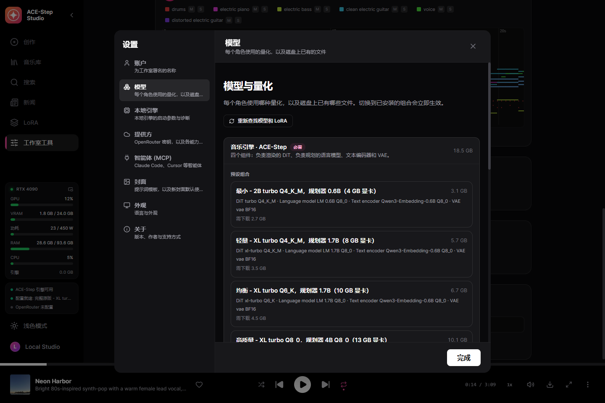

在你自己的显卡上生成带人声的完整歌曲
面向 ACE-Step 1.5 的桌面工作室——这个开源音乐模型能写能唱完整歌曲。描述声音并写下歌词——或只给一句话——它会用自己的语言模型规划歌曲，并在你的显卡上唱出来。一个 exe，基于原生 C++ 引擎 acestep.cpp——无需 Python，无需启动器。
Windows 10/11 x64，以及 4 GB 或以上显存的 NVIDIA 显卡（GTX 900 或更新）。模型在工作室内由你决定何时下载。
功能
除非你自己接入云端密钥，以下一切都在你的电脑上运行。
完整歌曲
根据描述和歌词生成最长十分钟的歌曲。ACE-Step 的规划器会补全你留空的内容——速度、调性、时长甚至歌词——并在 DiT 渲染前规划结构。
一句话生成歌曲
简单模式：输入一个想法，得到一首完整的歌。由写作助手或 ACE-Step 的规划器来写，二者从不同时工作。
所有 ACE-Step 模型
2B 与 XL 的 DiT——turbo、SFT、base、合并模型、社区微调——从 Q4 到 BF16，在创作表单上方切换。规划器有 0.6B、1.7B 和 4B。
翻唱、混音、重绘
把曲库中的歌曲渲染成新风格、做混音、重绘其中一段，或用 base 模型提取、添加和补全分轨。
精确重现
每首歌都保存请求和音频编码：可逐位重新渲染，也可换步数、新种子、多个版本。
200 个现成示例
ACE-Step 自带的示例请求，一键载入。
写作助手
本地 Gemma、OpenRouter 或你的智能体按 ACE-Step 官方作词规则，根据想法写出描述和歌词。
LoRA 目录
按点赞和下载量从 Hugging Face 精选的 131 个 LoRA，附描述与作者；还可搜索 Hugging Face 上的全部内容——每个文件下载前都会检查适配的模型尺寸。
自己的 LoRA
同一歌手或风格的歌曲在你的显卡上用 HOT-Step 训练器及其 LoKR 配方变成 LoRA。每项设置都可修改，检查点一键加入 LoRA 库。
一拖即成数据集
拖入文件夹：歌词逐字取自播放器使用的数据库，Whisper 只识别数据库里没有的，MOSS-Music 聆听并描述每首歌。重启后从中断处继续。
逐词卡拉 OK
每个词都有时间戳的增强 LRC，由 Parakeet 或 Whisper 对齐。
分轨与 MIDI
HT-Demucs 分出六轨；用 MuScriptor 把任意歌曲转为多乐器 MIDI，钢琴卷帘与原曲同步播放。
音频处理
降噪、Spectral Lifter、人声自然化、你自己的 VST3 插件，以及按参考曲目母带处理。
由你的智能体驱动（MCP）
连接 Claude Code、Claude Desktop 或 Cursor，智能体就能完成工作室的一切（164 个工具），还能看见并操作窗口。ACE-Step 的写作规则随附，智能体自己写歌。
用它做的歌
在发布版全新安装上渲染，按工作室保存的原样。
80s synth-pop, warm female vocal, analog arpeggios, gated reverb snare, 118 BPMRussian folk rock, raspy male vocal, accordion hooks, galloping bass, 142 BPMcity pop, airy female vocal, electric piano, slap bass, brass stabs, 104 BPMlatin pop, warm male vocal, nylon guitar, congas, piano montuno, 96 BPMinstrumental synthwave, analog bass arpeggios, gated drums, lush pads, 100 BPMone line: a warm lo-fi beat for a rainy night drive, dusty drums and mellow electric pianoacoustic ballad, breathy female vocal, fingerpicked guitar, gentle pianoroti-s1nthwv, driving synthwave, powerful male vocal, pulsing analog bass, 118 BPM截图
工作室本身，使用此语言。









模型
可运行的一组模型包括 DiT、规划器、文本编码器和 VAE，均为 GGUF。
| 你的显卡 | 模型组 | 下载量 |
|---|---|---|
| 24 GB | 完整原版 — XL turbo BF16，规划器 4B BF16 | 18.5 GB |
| 13 GB+ | 高质量 — XL turbo Q8_0，规划器 4B Q8_0 | 10.1 GB |
| 10 GB+ | 均衡 — XL turbo Q6_K，规划器 1.7B | 6.7 GB |
| 8 GB+ | 轻量 — XL turbo Q4_K_M，规划器 1.7B | 5.7 GB |
| 4 GB+ | 最小 — 2B turbo Q4_K_M，规划器 0.6B | 3.1 GB |
工作室会预选你的显卡能运行的模型组，但是否下载始终由你决定。每个文件都按固定的 Hugging Face 版本校验 SHA-256，中断的下载可以续传。
开始使用
- 安装 — 运行安装程序，或把便携压缩包解压到任意位置。
- 选择模型组 — 首屏会预选显卡能运行的组合，只下载缺少的部分。
- 写作 — 描述和歌词、一个示例，或在简单模式中写一句话。
- 创作 — 引擎自动启动，歌曲进入你的曲库。
什么在哪里运行
默认全部本地。云端密钥由你为所选功能添加。
| 部分 | 运行位置 | 大小 |
|---|---|---|
| ACE-Step 引擎（acestep.cpp） | 你的显卡：CUDA、Vulkan 或处理器 | 内置 |
| ACE-Step 模型组 | 你的显卡 | 3.1–18.5 GB |
| NVIDIA cuBLAS | 仅 NVIDIA 显卡 | 391 MB，一次 |
| 卡拉 OK 时间轴 — Parakeet 或 Whisper | 你的电脑 | 可选 |
| 分轨 — HT-Demucs | 你的显卡或 CPU | 可选 |
| 写作助手 | 本地 Gemma 或 OpenRouter | 可选 |
| LoRA 训练器 — HOT-Step ace-train | NVIDIA RTX 显卡 | 0.1 GB + BF16 DiT，可选 |
| 按听觉描述歌曲 — MOSS-Music-8B | 约 12 GB 显存 | 9.8 GB，可选 |
| 音频转 MIDI — MuScriptor（HOT-Step ace-midi） | NVIDIA GTX 16 / RTX 20 或更新 | 0.5–5.6 GB，可选 |
| VST3 宿主 — HOT-Step | 你的电脑，独立进程 | 内置 |
如何构建
服务编译进桌面程序并管理 C++ 引擎。完成的歌曲由服务自己导入，即使窗口被刷新或关闭，结果也不会丢失。
React UI ─┐
├─ ACE-Step-Studio.exe (Tauri window + Rust/Axum service)
Rust axum ┘ │
└─ acestep.cpp `ace-server` (C++/GGML, GGUF)
隐私
你的音乐属于你，并留在你的磁盘上。
无需账号
没有任何需要注册的东西。
无遥测
工作室不会报告你生成的内容。
云端需主动开启
在你添加密钥之前，没有任何数据离开电脑，且只用于该功能。
作者
Nerual Dreming——艺术家，ArtGeneration.me 与 Neuro-Cartel 社区的创始人，YuE2 Studio 和 MiniMax Music3 Studio 的作者，它们是面向其他音乐模型的同一款工作室。